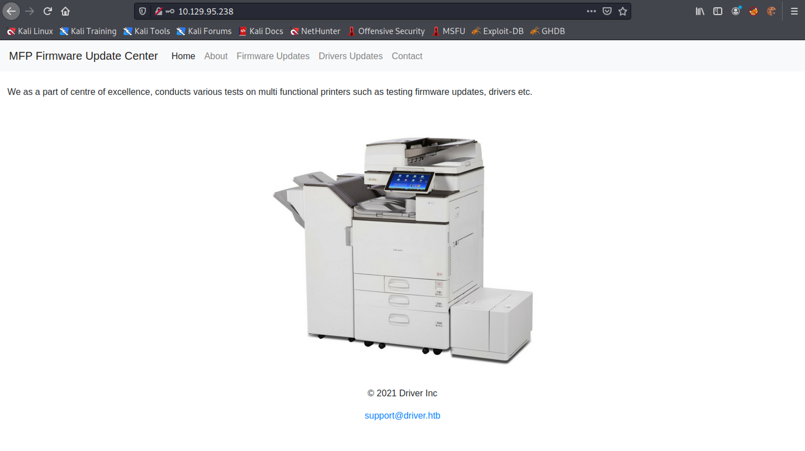
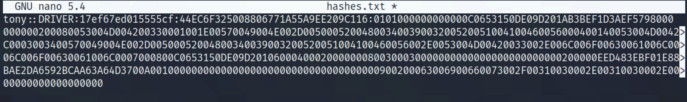

March 22, 2022
Capture Hashes with SCF File
In this tutorial, we will see how to capture the login credentials of a user by uploading a .scf file to a shared folder. Once a user accesses that folder, that particular user's hashes/login credentials will be shared with us. SCF stands for Shell Command File and it supports a very limited set of Windows Explorer Commands.
This page contains some more information about this attack. Accessing the printer by the IP address allows us to update its firmware or driver.
Click on "Firmware Updates". This page allows us to upload firmware.
Let's create a simple .scf file. This file tries to access the icon from our computer.
Upon clicking on "Browse" in the printer page, we click on the .scf file.
Click on Submit.
Running responder creates a bunch of listeners, e.g. HTTP, HTTPS, SMB, Kerberos, etc. We can see that we have the target connecting to us on the SMB server. It shows the password hashes for the "tony" user.

Once we save the hashes in a file we can run some cracking tool to crack it.
If you liked reading this article, you can follow me on Twitter: mujtabareads.
- ARP Privilege Escalation
- Privilege Escalation via Server Operators Group
- Exploit PrintNightmare
- Extract Passwords with LaZagne
- Local Privilege Escalation on Linux Kernel < 4.4.0-116
- Bruteforce Windows Server SMB Credentials with Medusa
- Brute Force Windows Server SMB Credentials with Hydra
- Brute Force Windows Server SMB Credentials with NCrack
- Brute Force Windows Server SMB Credentials with CrackMapExec
- Brute Force Windows Server SMB Credentials with Metasploit